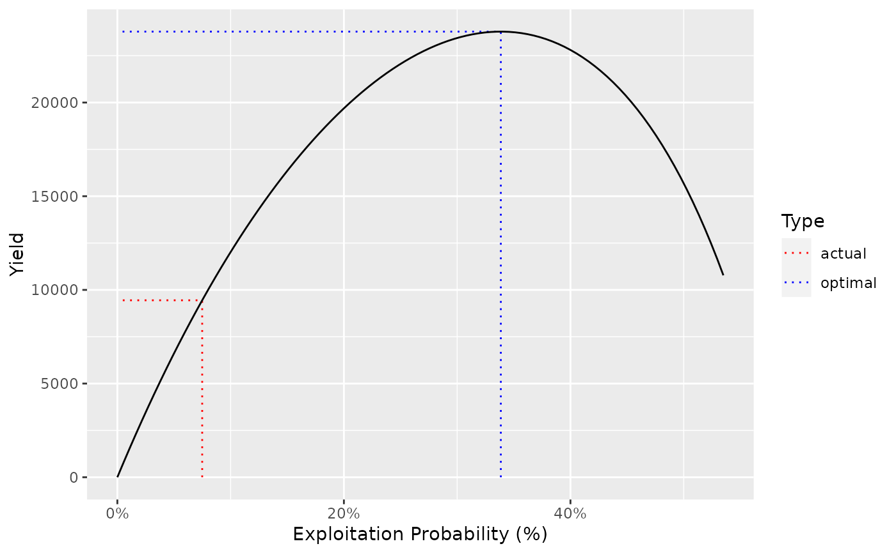

The population parameters for Rainbow Trout in Kootenay Lake.
kootenay_rbAn object of class ypr_population().
The estimates are liable to change and should not be used for management.
Thorley, J.L., and Andrusak, G.F. 2017. The fishing and natural mortality of large, piscivorous Bull Trout and Rainbow Trout in Kootenay Lake, British Columbia (2008–2013). PeerJ 5: e2874. doi:10.7717/peerj.2874.
Other data:
adams_bt_03,
chilliwack_bt_05,
kootenay_bt_13,
kootenay_rb_13,
quesnel_bt,
quesnel_lt,
quesnel_rb
kootenay_rb
#> tmax: 20
#> k: 0.26
#> Linf: 100
#> t0: 0.5
#> k2: 0.26
#> Linf2: 100
#> L2: 1000
#> Wb: 3.2
#> Ls: 75
#> Sp: 20
#> es: 0.9
#> Sm: 0.53
#> fb: 0.86
#> tR: 1
#> BH: 1
#> Rk: 17.65
#> n: 0.23
#> nL: 0.23
#> Ln: 50
#> Lv: 40
#> Vp: 10
#> Llo: 0
#> Lup: 1000
#> Nc: 0
#> pi: 0.14
#> rho: 0.62
#> Hm: 0.25
#> Rmax: 115000
#> Wa: 0.005
#> fa: 3.9
#> q: 0.028
ypr_plot_yield(kootenay_rb)
